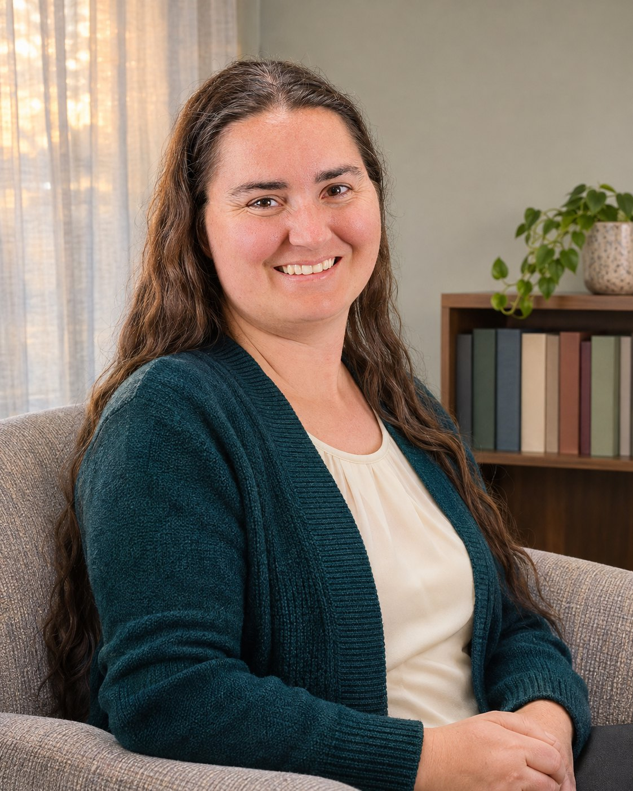
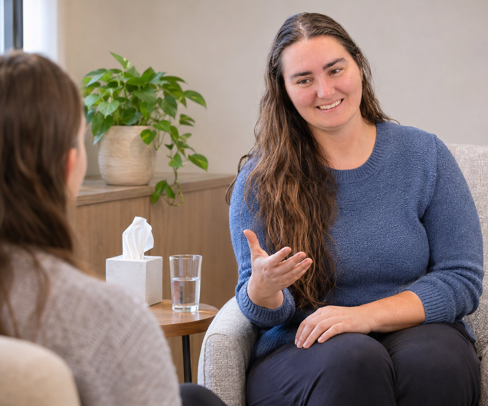

A social psychologist who spent fifteen years teaching how relationships work, and who now sits in the room with the people living them.

Kiersten R. Baughman holds a Ph.D. in social psychology from the University of Oklahoma, where she also took her master's in psychology, and a bachelor's in psychology and Spanish from Morehead State University. Her research asked why people hurt the people closest to them. Her teaching carried that research to undergraduates for more than fifteen years.
In June 2026 she completed a master's in marriage and family therapy at Northwestern University, and she is now completing postdoctoral training in clinical practice in the Greater Cincinnati area. The move was not a change of subject. It was the same question, asked from inside the room instead of from the data.
My approach to therapy is systemic, recognizing that many external factors contribute to reasons clients seek therapy.
Kiersten R. BaughmanHer focus is couples work. She also sees individuals and families, and she takes the view that the three are rarely separable: what shows up in one person usually has a history in a room full of other people.
She works with anxiety and depression, ADHD, children and teenagers, grief and loss, and life transitions, and names performance anxiety and trauma as her specialisms. She speaks Spanish; her first degree was in psychology and Spanish together.
Working with what is here rather than arguing with it.
The link between what gets thought, felt and done.
For the people who are hardest on themselves.
Changing the story a person has been told about themselves.
Short, practical work aimed at a specific change.
Recently trained, and used in parts within sessions.
Her training also includes mindfulness and person centred work. She does not run one method over every client. The method follows what the person in front of her needs, which is what the systemic view requires.

My research focuses on the culture of honor and its role in perpetuating intimate partner violence, and I enjoy infusing knowledge of empirical evidence into every single aspect of my teaching.
Kiersten R. BaughmanThe culture of honour is the set of rules, carried in a community rather than written anywhere, about when a slight has to be answered. Her work is on how those rules keep violence going between partners long after anyone remembers agreeing to them.
She has completed Green Dot violence prevention training, and she presents at academic conferences.
She has been teaching psychology, including online, since her first teaching post in graduate school in 2009, and has held several full time academic positions since.
I have over 15 years of experience in teaching a wide variety of psychology courses and published a textbook on learning as well as numerous articles in journals.
Kiersten R. BaughmanBachelor of Science in psychology and Spanish.
Master of Science in psychology, then a Ph.D. in social psychology.
First teaching post, in graduate school. More than fifteen years of teaching followed.
Completed a Master of Science in marriage and family therapy at Northwestern University.
Completing postdoctoral clinical training in the Greater Cincinnati area.
Every picture of Dr. Baughman on this page is an AI-generated illustration, produced with her approval from a reference photograph. They are not photographs of real events.